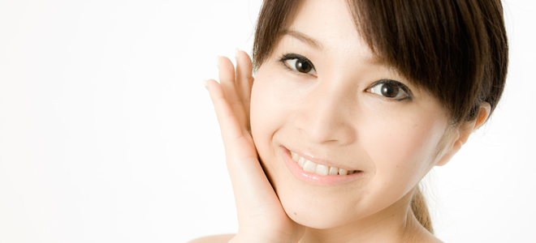
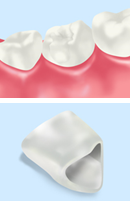
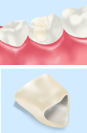
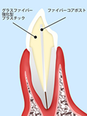
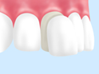
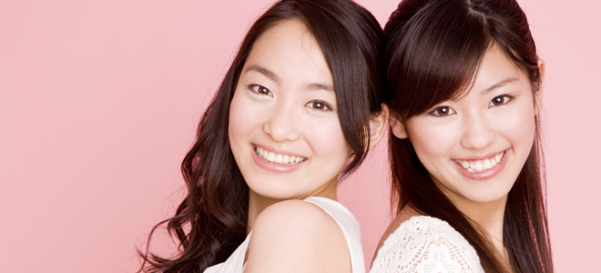
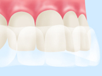

銀歯を白い素材に交換しましょう～審美治療～

「審美治療」はその名のとおり、「見た目の美しさ」に重点を置いた診療メニューです。歯みがきでは除去できない歯の黄ばみの解消、目立ってしまう銀歯（詰め物・被せ物）の素材交換など、皆様のお口のさまざまなお悩みに対応しています。患者様のお悩みに合わせた審美診療は、三田市の歯医者「しらやま歯科」へお任せください。
銀歯の問題点
「目立つ」ことを気にされる方も多い銀歯ですが、その銀歯をはじめとしたお口の中の金属素材には、金属アレルギーを引き起こす可能性があります。金属アレルギーとは、特定の金属が身体に触れることによって全身に起こるアレルギー症状です。患者様によっては、肌荒れや湿疹、口内炎、頭痛、倦怠感などのさまざまな症状に悩まされます。原因不明の症状にお悩みなら、もしかしたら銀歯がもたらす金属アレルギーによるものかもしれません。
セラミックのメリット
金属アレルギーの心配がなく、本物の歯と比べても違和感なく仕上がる素材が「セラミック」です。詰め物や被せ物にセラミックを使用することで、さまざまなメリットが得られます。
| メタルフリー | 金属をいっさい使用しないため、金属アレルギーの心配がない |
|---|---|
| 汚れにくい | 銀歯より汚れが付着しにくく、汚れても簡単に落とせる |
| 見た目が自然 | 見た目が本物の歯に近く、ほとんど見分けがつかない |
| 長持ちする | 数十年にわたって使い続けても劣化しないほど長持ちする |
当院の取り扱いメニュー
オールセラミック

すべてセラミックで作られた素材です。本物の歯と同じように光を透過するという性質があります。見た目が自然で美しいだけでなく、耐久性にも優れており、長年にわたって美しさを維持できます。
| 見た目 | |
|---|---|
| 耐久性 |
ハイブリッドセラミック

レジン（歯科用プラスチック）とセラミックをかけ合わせた素材です。見た目の美しさではオールセラミックに劣りますが、本物の歯に近い適度な弾力があるため、オールセラミックよりも割れにくいという特徴があります。
| 見た目 | |
|---|---|
| 耐久性 |
メタルボンド

金属製のフレームにセラミックを焼き付けた被せ物です。非常に丈夫で破損しにくく、強い圧力がかかる奥歯にも使用できます。ただし、金属を使用するため金属アレルギーがある方は使用できないことがあります。
| 見た目 | |
|---|---|
| 耐久性 |
ファイバーコア
グラスファイバー（ガラス繊維強化樹脂）でつくられた歯の土台（コア）です。柔軟な素材でつくられているため折れるリスクがほとんどないほか、本物の歯と同じように光を透過する性質があるため、見た目も自然に仕上がります。
| 見た目 | |
|---|---|
| 耐久性 |
ラミネートべニア

ホワイトニングでは白くできない歯や軽度の歯並びの乱れを改善するために使われるセラミック製の薄い板です。歯の表面を薄く削って張り付けることで、自然な見た目に仕上げます。
| 見た目 | |
|---|---|
| 耐久性 |
歯を自然で美しい白さに ホワイトニング

歯みがきでは除去できない、歯にこびりついた煙草のヤニや黄ばみ……。こうした着色汚れの問題を解決するのが「ホワイトニング」です。ホワイトニングでは、歯に専用の薬剤を塗布することで、歯みがきでは落とせないような黄ばみも除去して白くすることができます。
白い歯がもたらす印象
歯は、人の顔の中でも意外と見られている部分です。それだ けに、黄ばんでいたり黒ずんでいたりすると、全体の印象まで悪くなってしまうことも。それに対して、真っ白な歯は若々しく清潔で誠実な印象を与えます。ホワイトニングを行うことで自分の歯に自信を持てるだけでなく、ビジネスの場でも商談相手に好印象を与えられるかもしれません。
当院のホワイトニング
ウッディタウン中央駅・南ウッディタウン駅・新三田駅から通える歯医者「しらやま歯科」では、ホームホワイトニングとガムブリーチに対応しています。
ホームホワイトニング

ご自宅で施術できるホワイトニングです。歯科医院で患者様に合わせたマウストレーを作製し、そこに低濃度のホワイトニング剤を入れて数時間装着。これを毎日継続することで歯を白くしていきます。理想の白さになるまでは時間がかかりますが、白さが戻りにくいというメリットがあります。
ガムブリーチ
歯ではなく、歯ぐきに行うホワイトニングです。歯ぐきに沈着したメラニン色素や長期的な歯科用金属の使用による黒ずみを除去し、健康的なピンク色の歯ぐきに戻します。